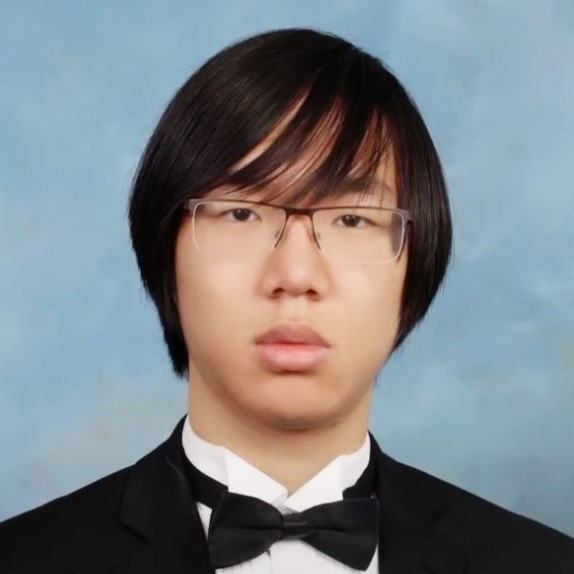
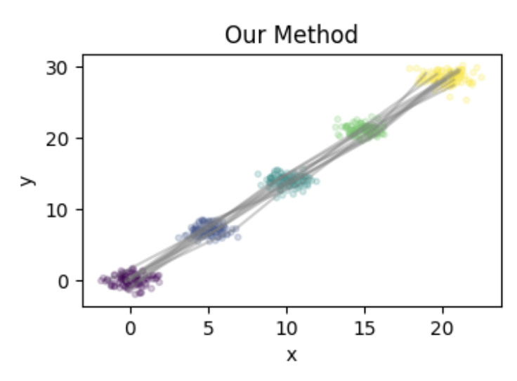
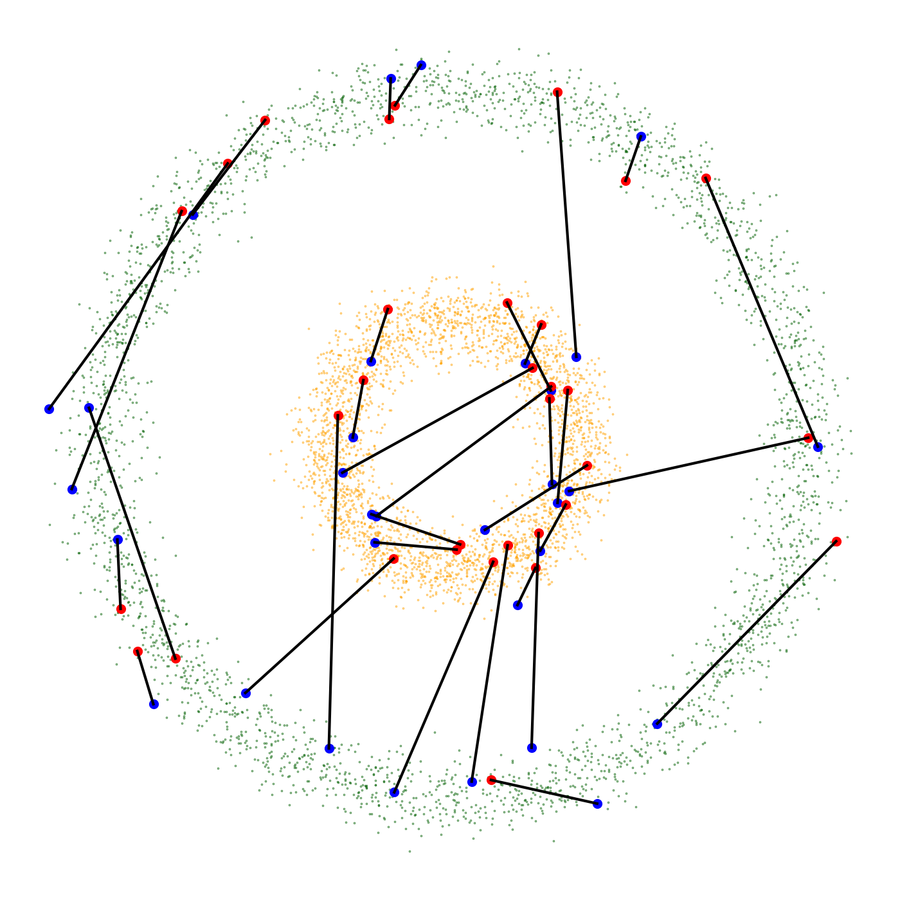

|
I'm a recent graduate of Boston University. I am currently working with Prof. Edward Chien on applied optimal transport in statistics and machine learning. My graduate coursework includes:
Teaching experience:
CV / Google Scholar / Github |
 |
{kind=link}
|
I'm interested in optimal transport, stochastic calculus, machine learning theory, and theoretical computer science. Some problems I'm interested in recently:
|
|  |
Anming Gu, Edward Chien, Kristjan Greenewald Pending submission to NeurIPS, 2024. link to come / code to come / thesis slides Trajectory inference is the problem of recovering a stochastic process from temporal marginals. We consider the setting when we cannot observe the process directly but we have access to a known velocity field. Using tools in optimal transport, stochastic calculus, and optimization theory, we show that a minimum entropy estimator will recover the latent trajectory of the process. We provide theoretical guarantees that our estimator will converge to the ground truth as the number of observations becomes dense in the time domain. We also provide empirical results to show the robustness of our method. |

|
Marc Anton Finzi, Sanyam Kapoor, Diego Granziol, Anming Gu, Andrew Gordon Wilson, J Zico Kolter, Christopher De Sa Pending submission to NeurIPS, 2024. link to come / code to come Why do larger language models generalize better? To address this question, we develop generalization bounds on the LLM pretraining objective in the compute optimal regime. We prove a novel fully empirical Freedman-type martingale concentration inequality, tightening existing bounds to account for the low loss variance. With larger models this variance decreases, meaning that our generalization bounds can even get tighter as the models get larger. We pair these findings with an analysis of the theoretically achievable quantization bitrates based on the Hessian of the loss function, controlling the other component of the bounded gap. With these results, we move towards a more complete understanding of why LLMs generalize. |
|  |
Kristjan Greenewald, Anming Gu, Mikhail Yurochkin, Justin Solomon, Edward Chien Transactions on Machine Learning Research, 2023. arXiv / code Mixup is a regularization technique for training neural networks that perturbs input training data in the direction of other randomly chosen training data. We propose a new variant of mixup that uses optimal transport to perturb training data in the direction of other training data that are more similar to the input data. We show theoretically and experimentally that our method is more effective than mixup at improving generalization performance. |
Inspired by Eric Zhang